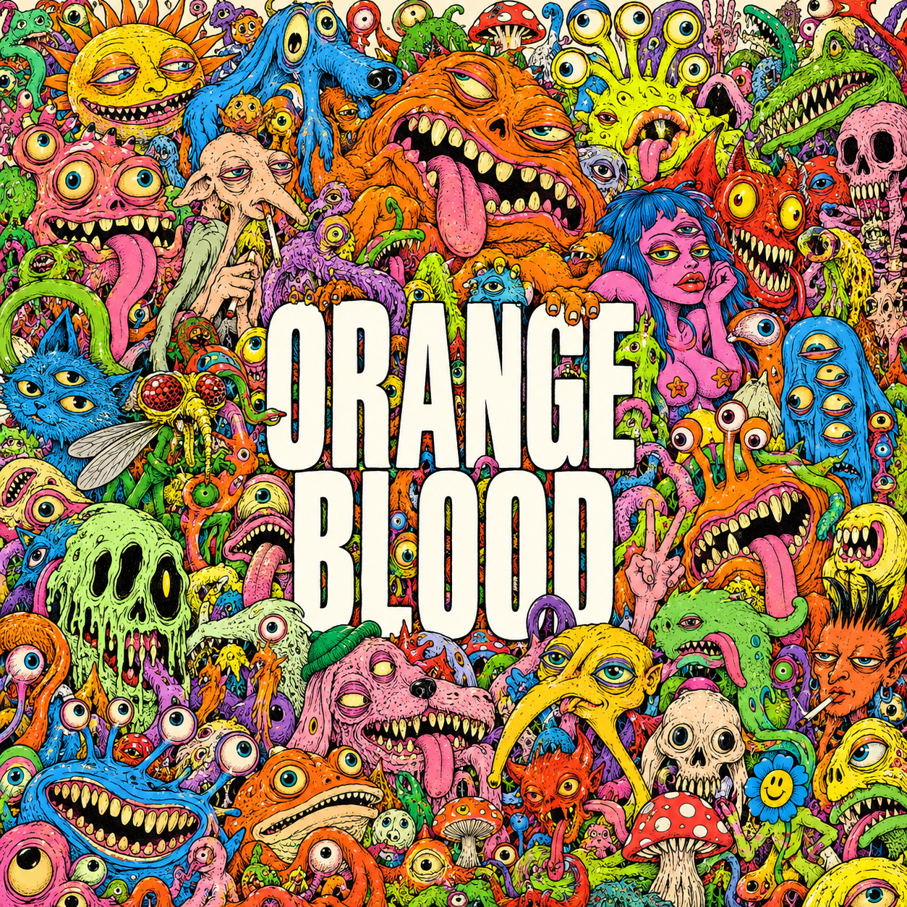
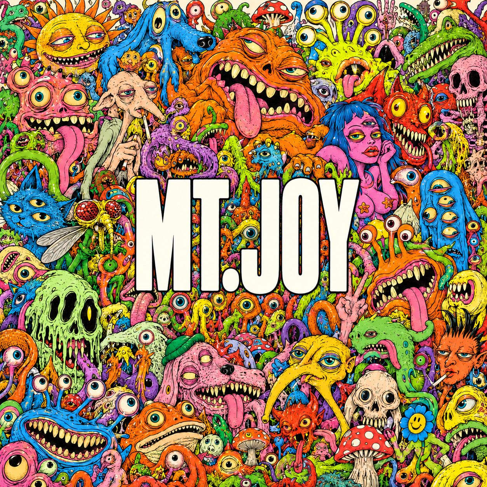

Project 01Image making
ORANGE
BLOOD
Album cover
A maximal illustrated world built from strange characters, exaggerated expressions, and a single oversized typographic interruption.

01 / VISUAL LANGUAGE
LOUD, CROWDED,
IMPOSSIBLE TO IGNORE.
The cover turns visual excess into structure. Repeated eyes, teeth, tongues, and irregular silhouettes form a dense field, while the centered title creates one clear point of entry.
Color supplies the energy; heavy white lettering creates the pause. The surrounding interface stays black and white so the artwork keeps control of the page.
02 / SELECTED PROCESS
TYPE CHANGES
THE CENTER.

03 / DETAILS